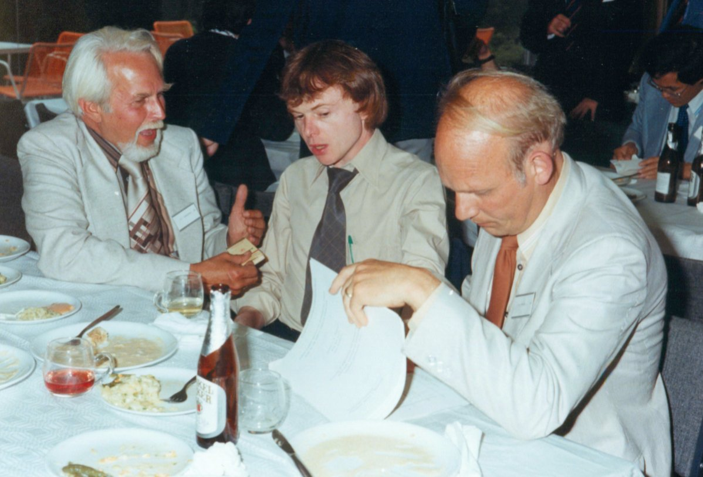
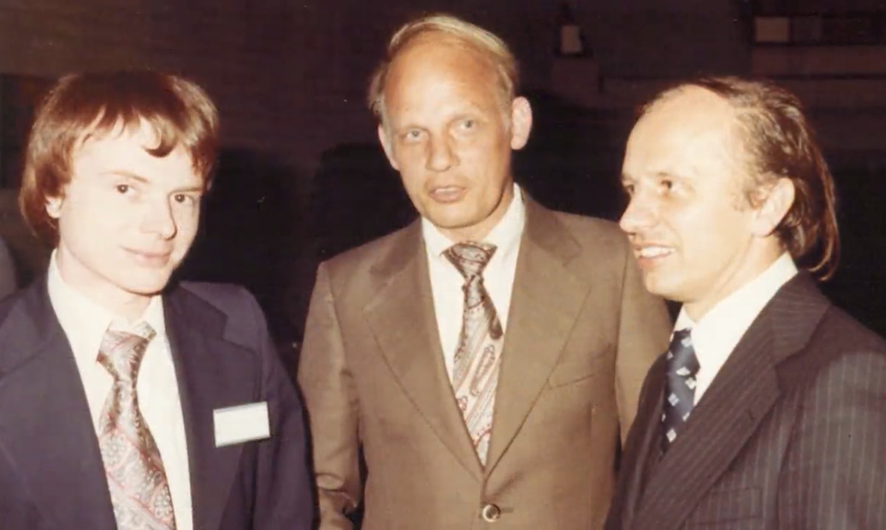
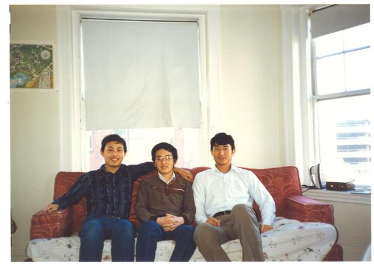
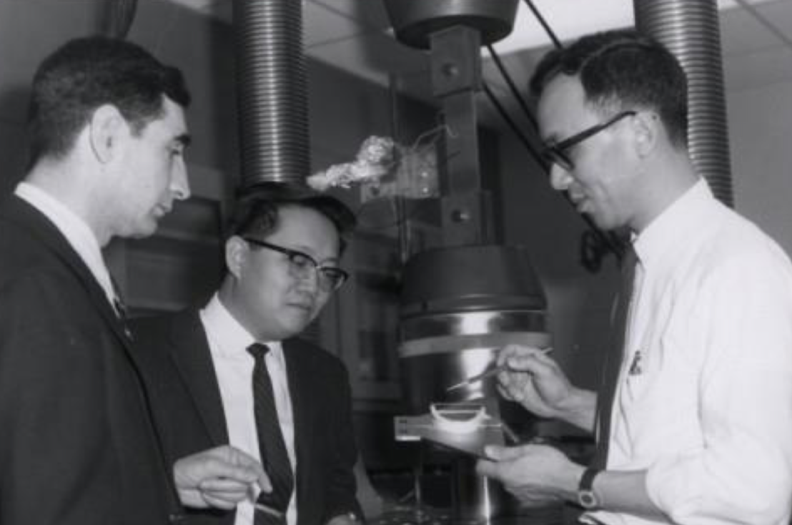
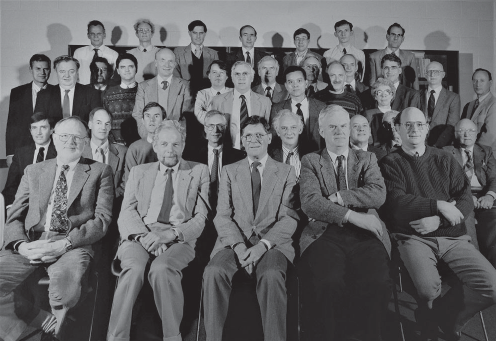
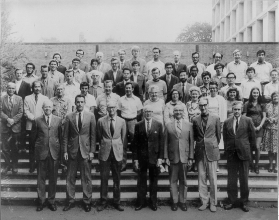
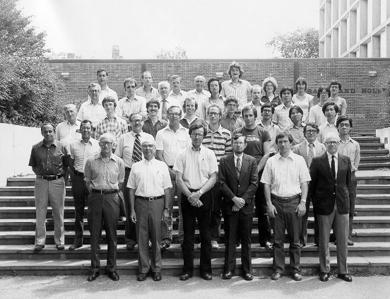
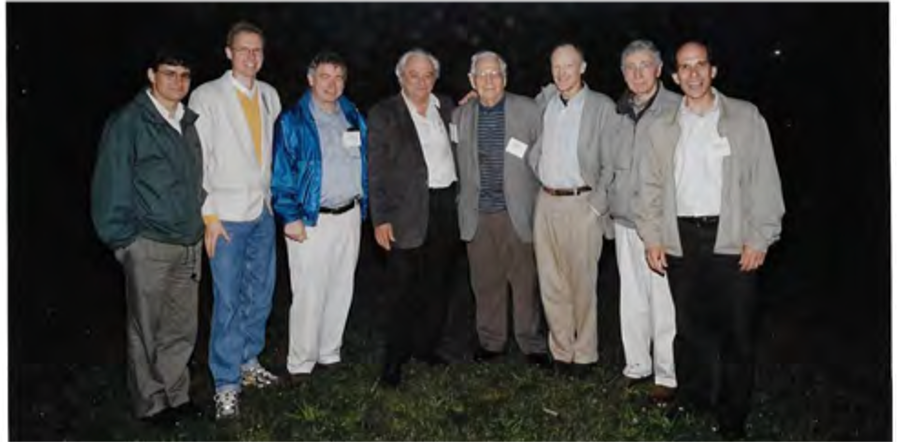
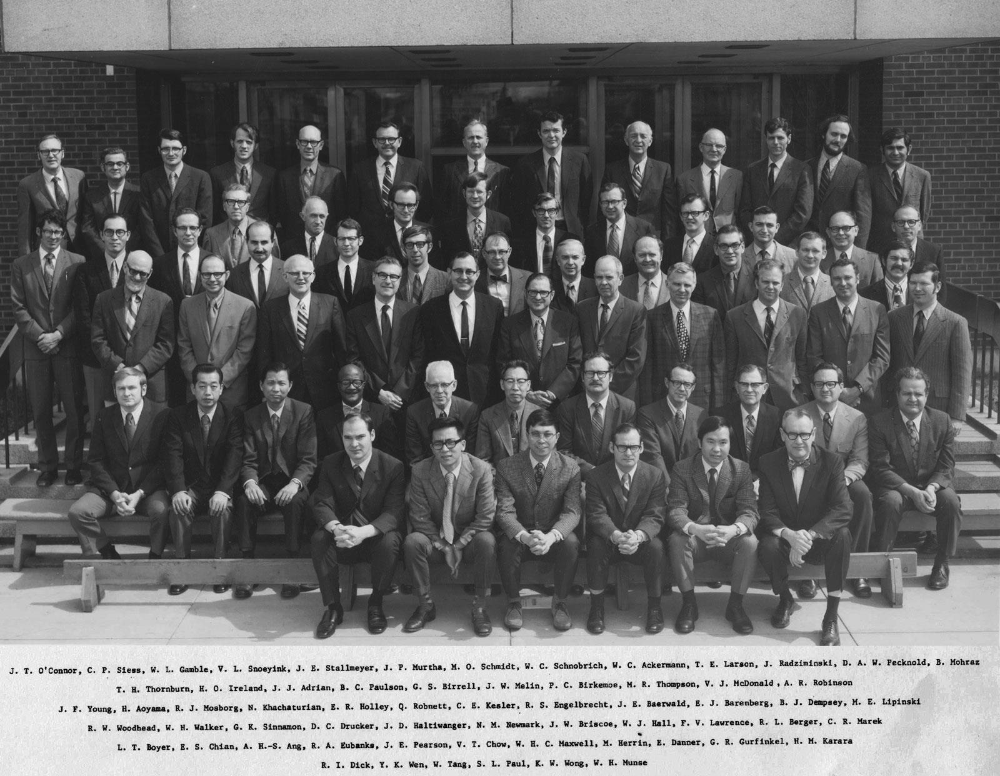
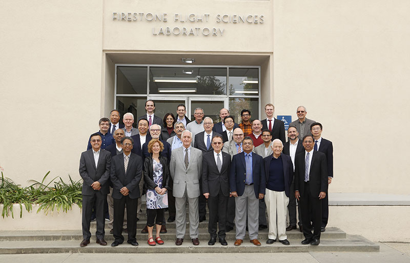

Group photos of mechanicians, for convenient stargazing
Since starting the Daily Mechanician project on Twitter in 2020, I have stumbled upon many star-studded photos of mechanics researchers. I thought it would be nice to gather them in one place.

O.C. Zienkiewicz, Thomas J.R. Hughes, and Robert L. Taylor at the FENOMECH 1978 in Stuggart, discussing Hughes, Pister & Taylor's paper later published in CMAME, titled "Implicit-explicit finite elements in nonlinear transient analysis".
(Much thanks to Professor John Dolbow for contacting Professor Hughes in Oct. 2021 to find out the story behind this photo!)
(Source: Prof. R.L. Taylor's presentation slides. )

Thomas J.R. Hughes, Robert L. Taylor, and Ted Belytschko, c. 1980.
(Source: To be verified )

Three Harvard graduate students in 1987: Zhigang Suo, Yonggang Huang, and Huajian Gao.
(Source: Prof. Suo's website at Harvard. )

Fazil Erdogan, George Sih and Robert Wei at Lehigh University, c. 1960s.
(Source: Lehigh University news article. )

Participants at the conference in Dublin on the occasion of Peter Chadwick’s retirement in 1991, including Chadwick (Row 1), Klaus-Jürgen Bathe (Row 2), and Ray Ogden (Row 4).
(Source: memorial tribute of Prof. Chadwick written by Prof. Ogden.)

Group photo of Brown University's solid mechanics program in 1970.
First row, left to right: Jack Duffy, Jack Pipkin, Paul Symonds, William Prager, Jerome H. Weiner, Constantine Mylonas and John Martin. Rodney J. Clifton is 6th from lef in the third row; L. Ben Freund is 2nd from left in the top row.
(Source: Prof. K.S. Kim's website at Brown University.)

Group photo of Brown University's solid mechanics program in 1979.
First row, left to right: P.S. Symonds, J.H. Weiner, L.B. Freund, R.J. Clifton, James R. Rice, J. Duffy.
Second row, left to right: N. Villella, R. Dean, M. Chosak, R. Hawley, A. Needleman, H. Riedel , R. Asaro, K. Lo.
(Source: Prof. K.S. Kim's website at Brown University.)

Gathering at Hutchinson-Rice 60th birthday celebration, c. 2021. Left to right: Pedro Ponte Castañeda, Joachim Grenestedt, James Rice, Paul Paris, Ferdinand Beer, John Hutchinson, Fazil Erdogan, and John Bassani.
(Source: Symposium honoring Prof. Rice's 80th birthday in 2021.)

Group photo of University of Illinois' civil engineering department in 1972, including Daniel Drucker and Nathan Newmark in Row 3.
(S

Sympsium honoring the 85th birthday of Wolfgang Knauss.
(Source: Symposium website at Caltech.)
Created by Zhiren Zhu - 2021